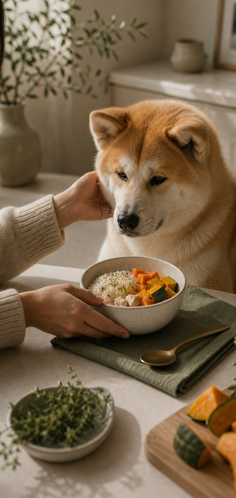

Bistro Pet
perfil do pet
Um cuidado mais íntimo começa conhecendo os pequenos detalhes.
Perfil afetivo
Conhecer para cuidar melhor.
Nome do pet
Nome do tutor
Idade
Peso
Raça
Estilo do cardápio
Perfil Livre
Para pets sem preferências específicas.
Perfil Personalizado
Quando existe algum cuidado ou preferência especial.
Detalhes para o chef
Prefere frango. Come melhor à noite.
Preferências
Gosta de arroz. Prefere refeições mornas. Ama frango.
Salvar perfil